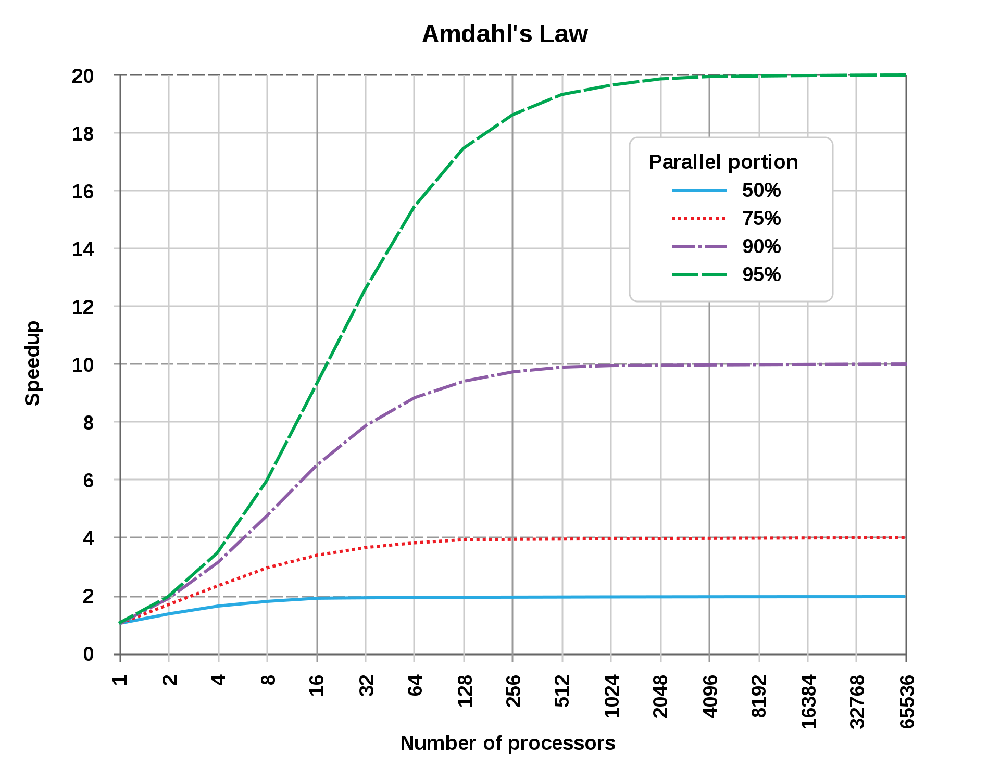

Distributed systems
3. Processes
Processes
Process - program in execution
-
management and scheduling of processes - important tasks for an operating systems
-
besides management and scheduling distributed systems have other issues
-
threads - play a crucial role in obtaining performance
in multicore and multiprocessor environments
-
virtualization - plays a significant role for concurrency
by allowing entire environment (including the operating system) to
work independently
-
Process migration or code migration helps
achieving scalability in distributed systems.
Processes
- question: How operating system executes a program?
- virtual processor - one created for each programm
- process table - keeps track of these virtual processors
-
storing process context containing entries for storing CPU
register values, memory maps, open files, privileges, etc.
-
operating system takes great care to ensure that processes don't
affect each other in an unexpected way
Threads
-
Concurrency transparency using processes is costly
-
Threads are solutions for achieving concurrency with lower overhead
-
Thread system maintains only minimal information to allow CPU to be
shared by several threads
-
threads allow blocking some system calls without blocking entire process
in which threads is running.
Threads
-
implementing of threads at the user level
also called many-to-one threading model
-
drawback -
multiple threads mapped to a single schedulable entity
-
problem: invocation of blocking system calls will blocks entire process
to which thread belongs
-
implementing threads in the operating system kernel
-
drawback - switching thread contexts as expensive as
switching process contexts
Threads
-
nevertheless using threads is only one way how to organize
simultaneous and concurrent executions
-
alternative way: applications are often constructed as a
collection of concurrent processes
-
example - Apache Web Server
- group of processes
- each process forms a single-threaded instantiation of the server
- thread programming is difficult because the developer is fully responsible for
managing concurrent access to shared data
- processes, on the other hand, are protected by hardware support
- access data outside allocated memory
Threads in distributed systems
-
way of making processes less blocking
-
expressing communications in the form of maintaining
more logical connections at the same time
-
Multithreaded clients
-
Multithreaded servers
Threads in Java
-
In java threads can be created in one of two ways:
- by extending Thread class
- by implementing Runnable interface
Extending of Thread class
public class ThreadExample extends Thread {
@Override
public void run(){
// thread body
}
}
thread is created and run by the following:
Thread newThread = ThreadExample();
newThread.run();
Threads - examples in Java
-
Task1: Write a JAVA program which starts 10 threads and
prints their Ids from the run method.
-
Task2: Solve the problem from the task 1 using
Runnable implementation.
Amdahl's law

- one CPU $$T_1 = t_s + T_p$$
- n CPUs $$T_n = t_s + \frac{T_p}{n} \ge t_s$$
- speedup $$S = \frac{T_1}{T_n} $$
- speedup $$S = \frac{1}{(1-p) + \frac{p}{N}}$$
example: theoretialy speedup is limited to at most 20 times if
0.95% of the program can be parallelized